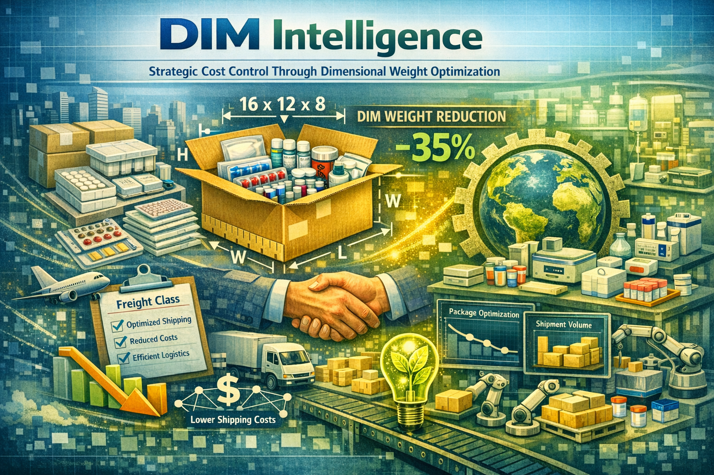

Understanding Dimensional Weight and Its Strategic Impact on Healthcare Logistics

Dimensional weight (DIM) has become one of the most influential cost drivers in modern healthcare logistics. As carriers shift toward volumetric pricing models, organizations that lack accurate DIM data face unpredictable shipping costs, inefficient packaging, and unnecessary waste. This brief outlines the fundamentals of DIM intelligence and how Strategic Lab Partners integrates it into operational workflows.
Dimensional weight is a pricing method used by carriers that considers the volume of a package relative to its actual weight. When the space a package occupies is more valuable than its physical weight, carriers charge based on the dimensional weight instead of the actual weight.
Accurate DIM data enables organizations to optimize packaging, reduce void fill, and avoid unnecessary overcharges. For healthcare programs with recurring kit shipments, even small inefficiencies compound into significant cost exposure. DIM intelligence helps ensure predictable budgeting, operational efficiency, and improved sustainability outcomes.
Strategic Lab Partners integrates DIM measurement directly into the SLP CONNECT™ ecosystem, ensuring every outbound package is evaluated using both actual and dimensional weight. This enables:
By embedding DIM intelligence into the kitting and logistics workflow, SLP ensures that research sponsors, CROs, and healthcare organizations maintain full visibility and control over shipping efficiency and cost exposure.
MISSION | Strategic Lab Partners (SLP)
Strategic Lab Partners (SLP) transforms research infrastructures across Genomics, Multi-Omics, and Precision Medicine by unifying data precision, logistical speed, and sample integrity in one connected ecosystem. Through SLP CONNECT™, our Premium Kitting Deployment and Centralized Management Platform, we integrate precision kit production, global logistics, and real-time digital visibility to ensure complete control from design to deployment. Our mission is to deliver reliable, scalable, and compliant operations that help research sponsors and CROs run complex studies with advanced-manufacturing accuracy. We elevate healthcare supply chains with universal kitting, serialized tracking, and value-based logistics—strengthening quality, reducing variability, and accelerating scientific discovery.